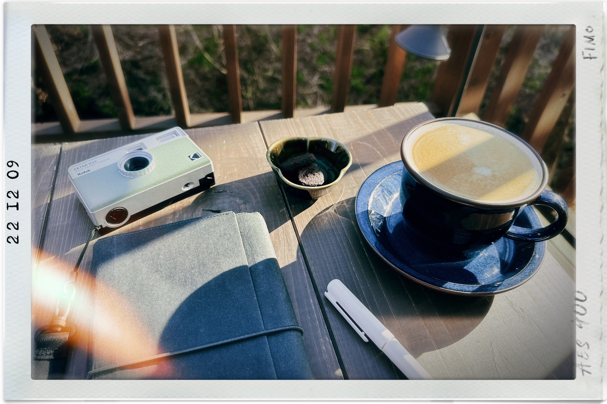
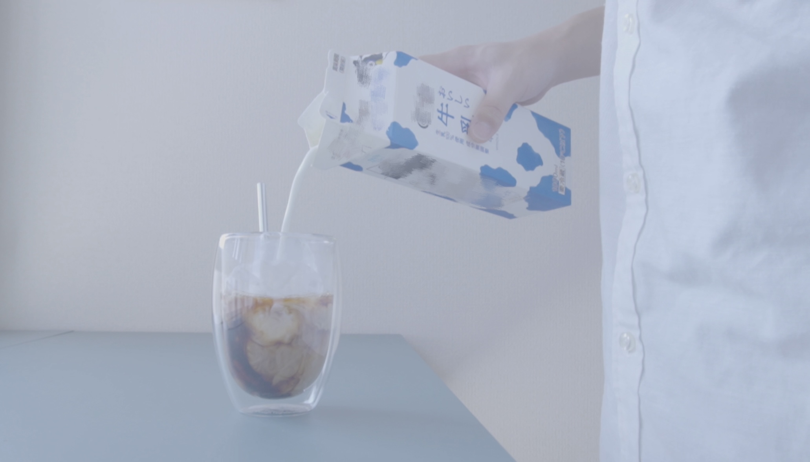
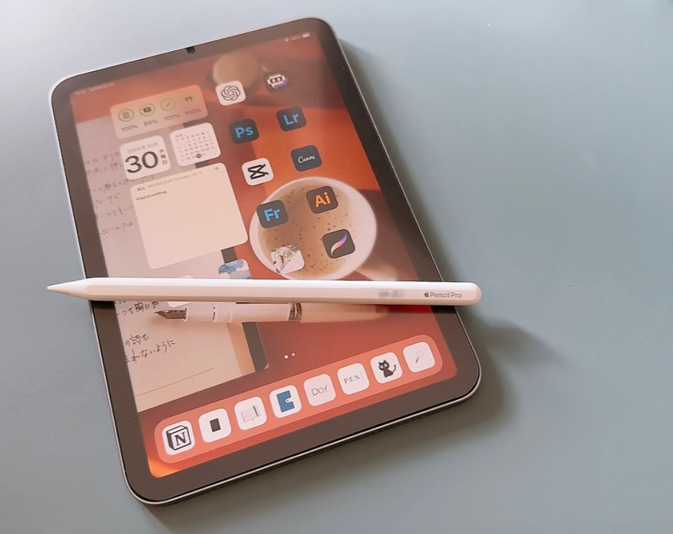
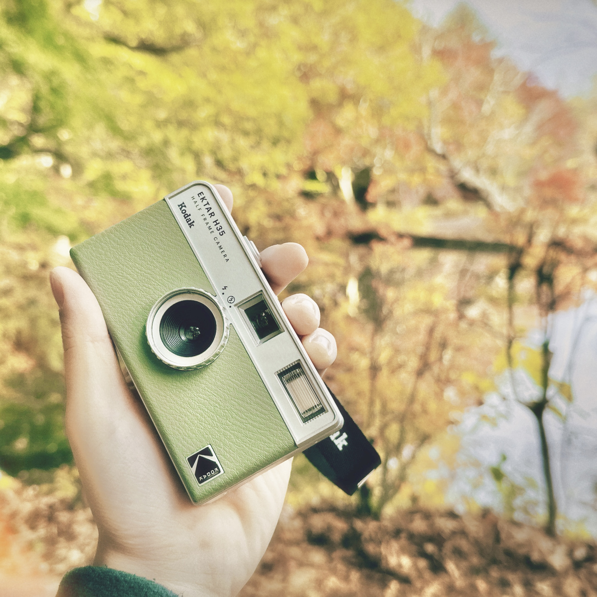
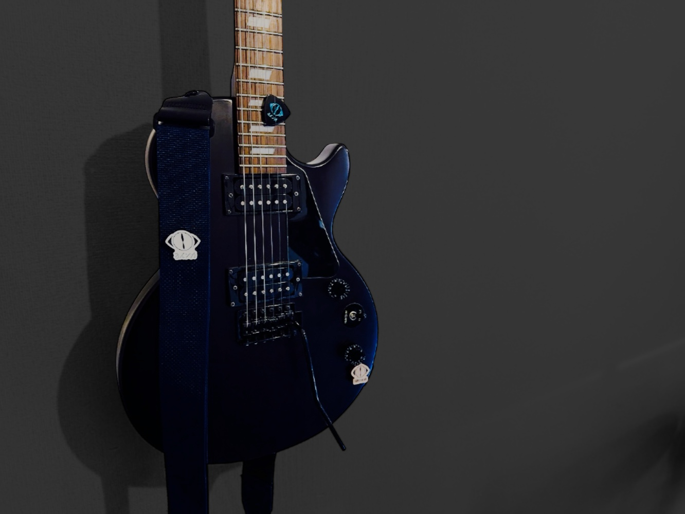
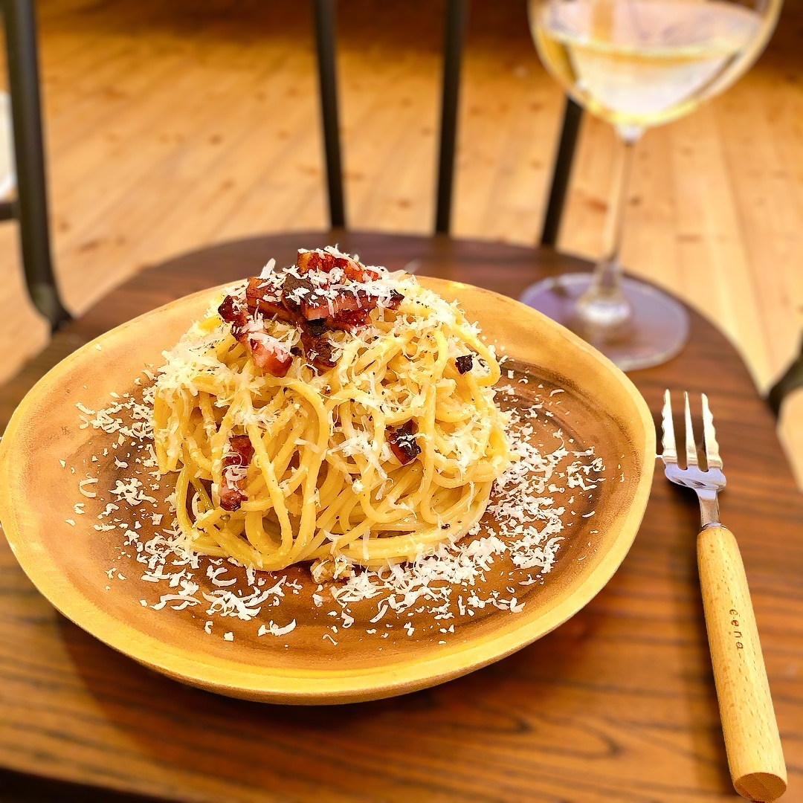

Profile
Name : unnamed
Gender : Man
Age : 25
From : Nagano
Hobby
【カフェ巡り☕ᐝ】
休日は家で過ごすか、
カフェに行くことが多いです。
時間があって読書もできる日は最高です。
積読が減ると気持ちがいいです📖´-


自分で珈琲やカフェオレ、
紅茶を淹れるのも好きです。
グラスとマグとコーヒーミルが
無限に増えていきます...
【ガジェット】
ガジェットが好きで、
特にApple製品が好きです。
機能性とデザイン性に優れた
ガジェットを集めるのが好きです。


綺麗な場所に行く時はカメラを
持っていきます。
記憶に残るような写真が撮れると
嬉しいですよね📷´-
おすすめのガジェットに
興味のある方はぜひ
お気軽にお聞きください！
【Game🎮´-】
家で過ごしている時は、
ゲームをしていることが多いです。
幅広いジャンルをプレイするので
タイトルは挙げきれないですが
ドラクエやマイクラなどは大好きです！

【Music🎧´-】
米津玄師やヨルシカ、Mrs.が特に好きで
ヨルシカのLIVEには毎回行っています。
ヨルシカのギター難し過ぎます...
【Food＆Alcohol🥂𓈒𓏸︎︎︎︎】
料理が好きです。
本格的に作った料理はお店の味に
勝るとも劣らず、そして経済的です！
毎晩、美味しい料理と
それに合ったお酒を飲むのが、
私流の人生を楽しむコツです！

ーご覧いただき
ありがとうございます！ー
以上、私自身の
人となりについての紹介でした！
少しでも私に興味を持って
いただけていれば幸いです！
Learnedや
Portfolio
ページもぜひご覧ください。